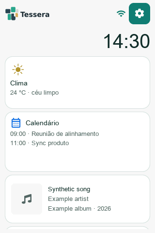
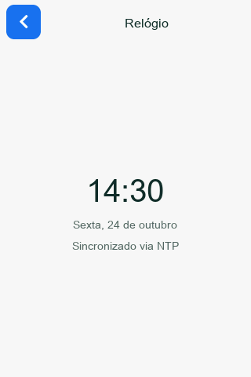
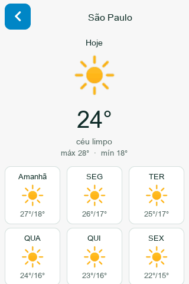
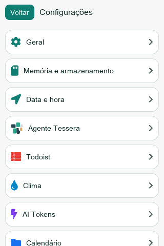
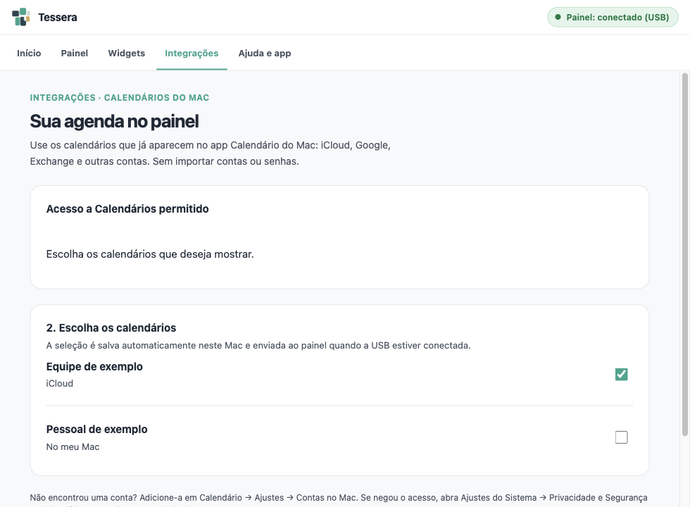

Um olhar é suficiente
Relógio e clima no próprio dispositivo. Widgets para acompanhar sua agenda, música, tarefas e cotas de IA.
Seu dia, à vista
Hora, clima, próximos compromissos e a música da vez. O Tessera reúne pequenas informações em um painel para sua mesa.
Código aberto · Painel ESP32 · Agente para Mac

Peças que se conectam
Relógio e clima no próprio dispositivo. Widgets para acompanhar sua agenda, música, tarefas e cotas de IA.
O Agente lê as integrações que você escolher e envia os dados pelo USB. Contas e credenciais ficam no Mac.
Ajuste brilho e descanso na tela. Use o Agente ou o portal no Wi‑Fi para configurar os widgets com mais espaço.



Integrações sem complicar
Uma permissão do sistema e uma escolha sua. O Agente usa as contas que você já configurou no app Calendário.

Do primeiro acesso ao primeiro widget
Você precisa de um painel JC3248W535, cabo USB de dados e Wi‑Fi. O Agente é para Macs com Apple Silicon e macOS 13 ou mais recente.
Já está com Tessera instalado? Ligue e siga as instruções de Wi‑Fi na tela. Para um painel novo, prepare o firmware pelo guia de instalação. Esta versão ainda exige as ferramentas de desenvolvimento para gravar o dispositivo.
Ver guia do dispositivo ↗O instalador prepara o serviço em segundo plano e o aplicativo Tessera. Baixar apenas o ZIP do aplicativo não instala o serviço.
Abra o Terminal e execute o comando abaixo. Ele baixa o instalador do projeto, verifica o pacote e instala o Agente e o app.
curl -fsSL https://gilsondev.github.io/Tessera/install.command | bashO app ainda não é notarizado. Se o macOS bloquear a abertura, use Ajustes do Sistema → Privacidade e Segurança → Abrir Mesmo Assim.
Abra Tessera, escolha o que acompanhar e autorize o acesso necessário. Conecte o cabo USB: o app confirma quando encontrar o painel.
A Agenda usa os calendários que você já adicionou ao Mac. Basta permitir o acesso e escolher o que mostrar — sem importar contas ou senhas.
Escolher calendários do Mac ↗Escolha os widgets nas abas Painel e Widgets do Agente, ou abra tessera.local no mesmo Wi‑Fi. USB sincroniza o Mac; a rede local permite salvar os ajustes do dispositivo.
Antes de começar
Relógio e clima funcionam no dispositivo. Agenda, música, foco, tarefas via Agente e cotas de IA precisam do Mac conectado por USB para atualizar.
Os widgets mostram o que acontece no Mac. Altere música e foco no próprio computador; o Tessera acompanha as mudanças. Álbum e ano aparecem quando fornecidos pelo player. O Spotify não informa o ano pela integração atual.
Não. O simulador executa as telas do firmware no computador, com dados de exemplo. Você pode contribuir com código, documentação e testes sem hardware.
No Mac ou na configuração local do painel, conforme a integração. O site não recebe suas contas. Não publique capturas com eventos, tarefas ou credenciais pessoais.
Uma peça sua também cabe aqui
Widgets independentes, simulador e guias abertos. Comece pelas instruções de contribuição, rode o projeto localmente e escolha uma melhoria pequena.